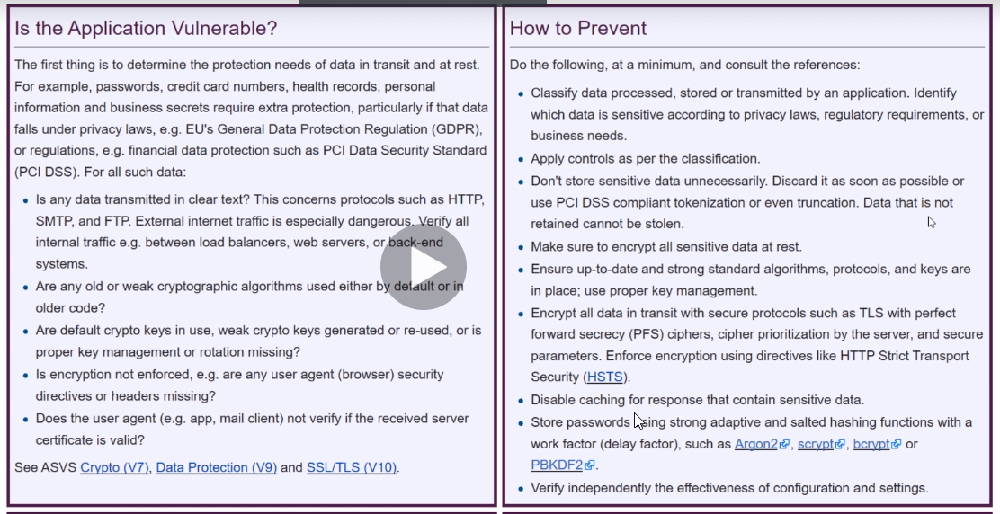

lets say testing agaoinst hospital and its exposoing PII(Personally identifieable information)
or credit card or finanncial info is being exposed
passwords stored in clear text file is also a problem(found in one bug bounty program)-had js file wide open theyre were stored credentials in it(government sites are easy to test)
one directory was backuo directory which had entire zip of ther whole site and had everything of site which was easy to get for him

dont store sensztivie data if u dont have to
have encrypted data
use strong passwords and strong protocols
use ur enumeration abilities
u might have to dig deep at times and read 100 's of js files
Security headers are important